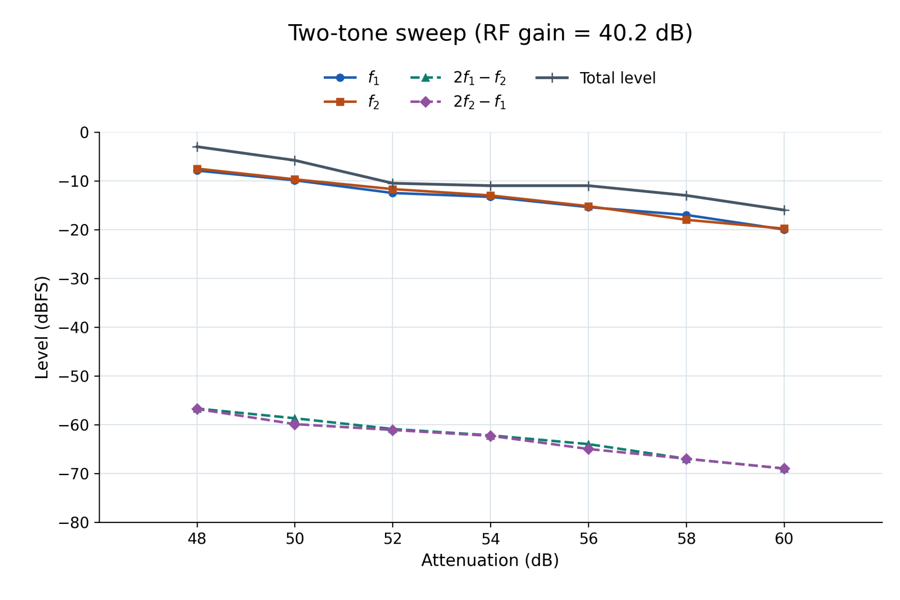
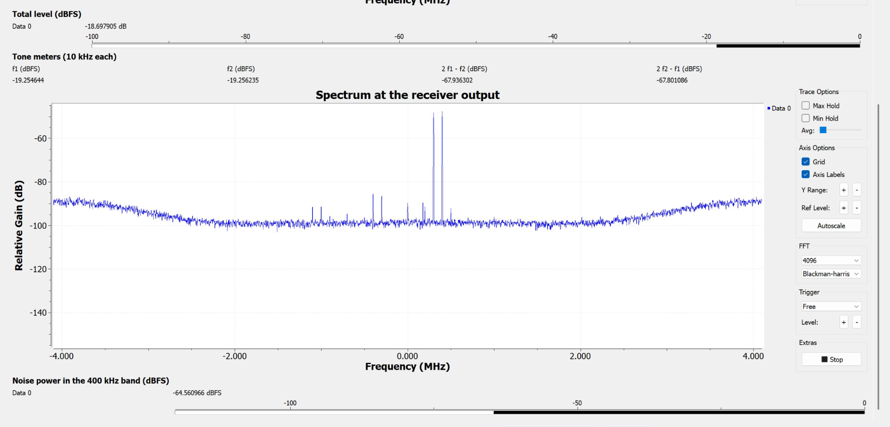
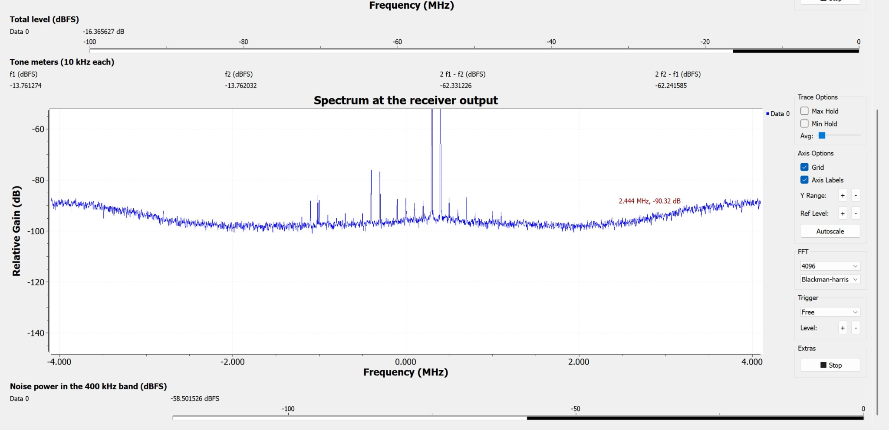

روش انجام آزمایش
فرستنده از طریق تضعیفگر ثابت به ورودی گیرنده وصل شد. در فلوگراف lab02_combined بهرهٔ گیرنده روی تنظیم شد. در آغاز، خروجی در حالت Off (zeros) و Record I/Q خاموش بود. کف دو نوار دهکیلوهرتزی محصولات مرتبهٔ سوم از نوارسنجها خوانده شد. کف و بهترتیب و بود (شکل ۲).
دو تن همدامنه با آفستهای و نسبت به اعمال شدند. فاصلهٔ دو تن بود و نوارسنجهای محصولات و در آفستهای و قرار داشتند. با ثابت نگهداشتن بهرهٔ گیرنده، تضعیف فرستنده از تا در گامهای کم شد. در هر گام، چهار نوارسنج و سطح کل خروجی ثبت شدند.
توان ورودی هر تن و فاصلهٔ آن تا محصول
در مدل اسمی رابطهٔ (۲) دستورکار، دامنهٔ دیجیتال هر تن و افت مسیر در عبارت ثابت منظور شده است. توان ورودی هر تن با مرجع تبدیل برای بهرهٔ از روابط زیر به دست آمد.
اگر سطح دو تن و سطح دو محصول در خروجی باشند، فاصلهها را در دسیبل چنین تعریف کردیم.
| تضعیف فرستنده (dB) | |||||||
|---|---|---|---|---|---|---|---|
| توان ورودی اسمی هر تن (dBm) | |||||||
| توان ورودی اسمی هر تن (dBFS) | |||||||
| (dBFS) | |||||||
| (dBFS) | |||||||
| (dBFS) | |||||||
| (dBFS) | |||||||
| سطح کل خروجی (dBFS) | |||||||
| (dB) | |||||||
| (dB) | |||||||
| (dB) | |||||||
| شیب اندازهگیریشده برای برونیابی معتبر کافی نیست | |||||||
هر هفت نقطهٔ جدول ۶ در محدودهٔ تعیینشده توسط دستیار آموزشی ثبت شدند. در گام آغازین اختلاف دو تن بود و معیار دستورکار را برآورده کرد. در گامهای و ، اختلاف بهترتیب و بود. در قویترین گام، توان ورودی اسمی مجموع دو تن با افزودن به توان هر تن، به دست آمد.
نمودار جدول ۶


معیار آشکارسازی و محاسبهٔ شیب
در ، هر دو محصول در جدول ۶ حدود بودند. این نخستین نقطهٔ ثبتشده با محصول قابلتشخیص است. دو محصول بهترتیب و بالاتر از کف نوارهای خود بودند. بنابراین در نخستین توان ورودی اسمی، یعنی یا برای هر تن، معیار دستورکار برقرار بود. آستانهٔ دقیق ظهور در ورودیهای ضعیفتر از آغاز جاروب تعیین نشد.
هر هفت نقطه شرط فاصله از کف را داشتند و در برازش خطی کمترین مربعات استفاده شدند. متغیر افقی برازش ، افزایش توان ورودی هر تن نسبت به گام نخست است. بنابراین با کاهش تضعیف، و توان ورودی افزایش مییابند.
| خواندن خروجی | ||||
|---|---|---|---|---|
| شیب (dB/dB) |
طبق برازش، با افزایش ورودی، دو محصول حدود و رشد کردند. پاسخ مکعبی در ناحیهٔ سیگنال کوچک برای همین گام حدود رشد پیشبینی میکند.
پاسخ پرسش ۴
شیب هر دو محصول نزدیک یک بود و در بازهٔ تا باقی ماند. این روند با یک مؤلفهٔ مزاحم که همراه تنهای اصلی تقریباً خطی تغییر میکند، سازگار است. رابطهٔ از برونیابی تن با شیب یک و محصول با شیب سه به دست میآید. چون شیب دوم در دادهها برقرار نبود، مقدار گیرنده از این جاروب قابل تعیین نیست.
آزمون منبع با کاهش بهرهٔ گیرنده
در تضعیف ثابت ، بهرهٔ گیرنده از به کاهش یافت.
| بهرهٔ گیرنده (dB) | سطح کل (dBFS) | (dB) | ||||
|---|---|---|---|---|---|---|
برحسب dBFS هستند. میانگین دسیبلی تنها از به و میانگین دو محصول از به رسید. افت مطلق تنها و محصولات بهترتیب و بود و فاصلهٔ فقط تغییر کرد. اگر کاهش بهرهٔ در ورودی یک طبقهٔ مکعبی رخ دهد، انتظار میرود محصول آن طبقه حدود افت کند و فاصلهاش از تن حدود بیشتر شود. افت تقریباً یکسان مشاهدهشده با حضور محصولات پیش از مرحلهای که بهرهٔ آن تغییر کرده، سازگار است. فرستنده یکی از مکانهای محتمل تولید این محصولات است و آزمون محل دقیق تولید را مشخص نمیکند.
پاسخ پرسش ۵
در مدل فشاری با و ، دامنهٔ مؤلفهٔ مکعبیِ هر محصول دوتن است. برونیابی آن در به دامنهٔ مؤلفهٔ خطی میرسد. در آزمایش تکتن، افت وقتی رخ میدهد که سهم مکعبی از دامنهٔ خطی به کسر برسد. پس اختلاف نظری دو توان ورودی در این مدل برابر است با
در دادههای آزمایش، شرط برونیابی برقرار نبود و نقطهٔ تراکم تکتن هم تعیین نشد. اختلاف تجربی این دو کمیت قابل محاسبه نیست. با توان یکسان برای هر تن، دامنهٔ قلهٔ دو تن در لحظهٔ همفازی تا میرسد، یعنی بالاتر از قلهٔ تکتن با دامنهٔ . به همین دلیل ورودی دوتنی در توان پایینتری برای هر تن به حد دامنهٔ قابلتحمل مدار یا مبدل میرسد.
خواندن نوارسنجها در تصاویر
| شکل | سطح کل | |||||
|---|---|---|---|---|---|---|
| ۲ | ||||||
| ۳ | ||||||
| ۴ |
همهٔ خواندنها برحسب dBFS هستند. قرائتهای لحظهای شکلهای ۳ و ۴ با برخی مقادیر ثبتشده در جدول ۶ اختلاف دارند. برازش شیب و آزمون منبع بر دادههای ثبتشده در اکسل تکیه دارند.
تصاویر طیف گیرنده





ثبت اجرای مراحل
دو تن با فاصلهٔ اعمال شدند و همسطحیِ آغاز جاروب با اختلاف بررسی شد. سطح آغاز و پایان با تضعیف واقعی ثبت شدند، چون جاروب تکتن به نقطهٔ تراکم نرسید.
چهار نوارسنج و سطح کل در هفت گام ثبت شدند. تصاویر حالت خاموش و تضعیفهای و همراه جدول دادهها آمدهاند.
هر دو محصول در هفت گام بیش از بالاتر از کف خود بودند. شیبها با برازش توان محصول بر افزایش توان هر تن محاسبه شدند.
اولین ورودی ثبتشده با محصولات آشکار برای هر تن بود. گزارش از معیار شیب برای قضاوت دربارهٔ اعتبار تقاطع استفاده میکند.
در تضعیف ثابت ، بهرهٔ گیرنده کم شد و تغییر تنها، محصولات و فاصلهٔ آنها محاسبه شد.